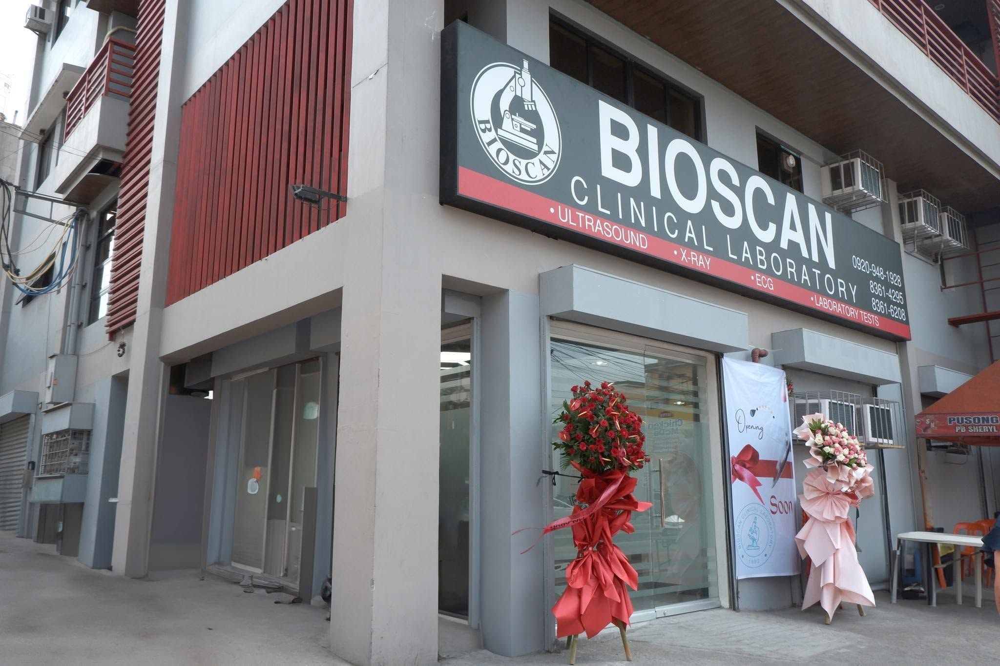

Plan your
laboratory visit.
BioScan Laboratories is a diagnostic center in Potrero, Metro Manila. Browse laboratory tests and imaging services, then choose a time for your visit.

Common laboratory tests
Diagnostic Services
Search by test name or browse by category.
Several tests. One reservation.
Explore bundles made from our available services.
Hover over a service, or select its name, to see the price, details, and preparation.
| Diagnostic Service | Category |
|---|
Clinic Information
BioScan Laboratories was established in September 1993. Its Diagnostic Services include laboratory testing, X-ray, ultrasound, and ECG.
Bring your Reservation Code to the front desk. Contact the clinic directly for changes to an existing Reservation.
BioScan Laboratories on Facebook